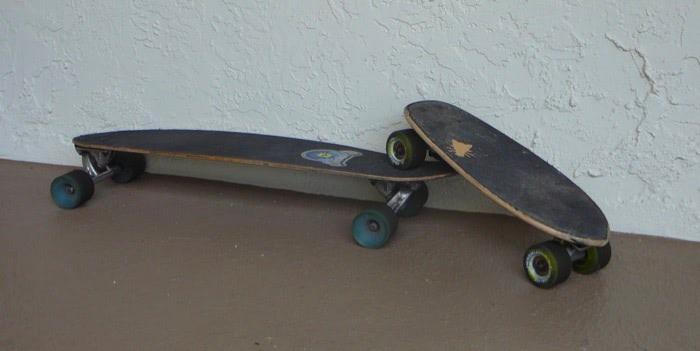

“Kicking is the most natural of human actions. Even unborn children kick.” I read that in a soccer magazine when I was little and it stuck with me long after I stopped playing. Lupe Fiasco’s breakout single reduced skateboarding to “kick, push, coast.” Put both maxims together and you have cruising around on your board as a natural extension of human instinct.
Or at least, that’s how I see it. I don’t—can’t—do any tricks. Get me out of the skatepark, and forget about any ollies. I just want to get on a board and head for some smooth asphalt. If the wind’s at my back and the world’s descending in front of me, I can cruise forever. No effort, no style, just me and my thoughts.
I’ve always felt comfortable alone. As one popular essay put it, alone time actually restores energy for some people (myself included—never had I thought “This person GETS me” until I read that). So I began to purposefully observe these solitary hours as recharge time, and often they entailed a ride around the neighborhood. A Prius recharges its batteries when you apply the brakes. I recharge mine when I cruise with abandon.
SIDEBAR: can I get a little MTV Cribs on you? I kind of see my two boards as cars. There’s the everyday ride, like some kind of luxury sedan, and the warm-weather sports coupe. More technically: a 34" Sector 9 deck with the perfect amount of flex, 180mm Randal trucks and 68mm Avalon wheels; and then an 18" Madrid deck, tiny 77mm trucks and 71mm Madrid wheels. I don’t know why the decks are imperial and the rest are metric. That’s skateboarding for you — NO RULES!
Whether on my main board which can roll forever, or my tiny board which I can grab without a second thought, I can ride away any pent-up anxieties. Sometimes I listen to music, but that can turn into its own thing—when I bought an iPod shuffle in college, I stopped skating to class because I wanted to take the extra time to walk and listen. I never take my phone with me. If I’m awake late at night or early in the morning, I’ll find an empty street on a downhill and gently carve subtle back-and-forths for its entire length, over and over. It always works. I come back refreshed, clear, and calm.
There are other ways to recharge, of course. Sitting in bed or a comfy chair and getting lost in a story. Turning the music up loud and putting the player or the remote out of reach. Packing a backpack and going to Vegas for 48 hours (but no more). Seriously. They’ve all worked for me. It’s about steering your mind towards something outside your everyday life and letting it play there. For me, that will always be the simple pleasure of cruising on a skateboard.